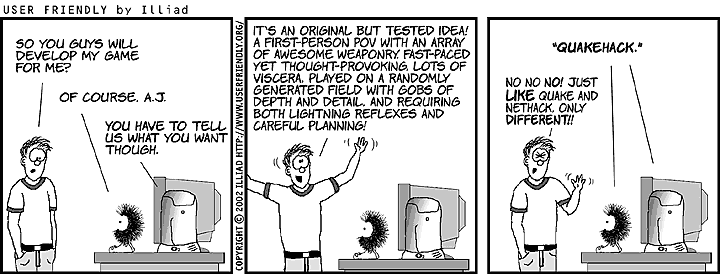
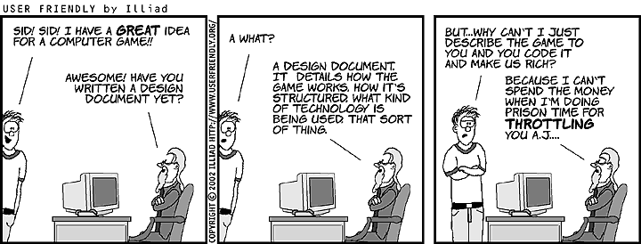

Mychaeel/Mod Startups
The following expresses my personal opinion and not necessarily anybody else's. Do not edit, but feel free to comment in the comments section at the bottom of the page.
The opinions stated here are subject to change without notice.
Before you start reading, here are a few common misunderstandings about this page I'd like to avoid.
- I'm not talking about your mod or mod concept in particular here, and some parts of this article might not even apply to you.
- Neither I nor the person posting a link to this article are trying to offend you.
- It is not sufficient to read the parts in boldface to understand this article. (If it was, I wouldn't have bothered with writing the parts in-between.) Especially if you think you don't need this advice, please at least read the entire article and ponder it in order to make that an educated decision, not just an offended retort.
...and a request to people linking to this page: Please be polite and constructive. Your advice, although probably well-meant, is unrequested and most likely unasked for. If you really want to help, be kind.
Mod Startups
I'm writing this in anticipation of a surge of calls for new mod teams as soon as UT2003 is released to the public. Already now, a couple of weeks before the release and still before the demo is officially available, many people are posting in forums with their mod ideas in search for a team to make them reality.
Unfortunately, many of those calls are doomed to start with. Why? Read on.
Mod Ideas

|
Everyone is an idea man. Everybody thinks they have a revolutionary new game concept that no one else has ever thought of. Having cool ideas will rarely get you anywhere in the games industry. You have to be able to implement your ideas or provide some useful skill. This also applies to mod authoring. If you become a skilled or notable mod author, you will find people propositioning you to implement their ideas.
Never join a project whose idea man or leader has no obvious development skills. Never join a project that only has a web designer. You have your own ideas. Focus on them carefully and in small chunks and you will be able to develop cool projects.
Brandon Reinhart, Mod Authoring
There's nothing wrong with enthusiasm or having great ideas that go beyond things that already exist. But enthusiasm and ideas alone don't make a mod; you need skilled people for that. Of course everybody who calls for a mod team realizes that. Only few people realize what such a call takes to be attractive though. Ask yourself:
- Why should anybody be interested in joining your team? Don't presume that anybody will be awestruck by your idea. Everybody is an idea man; rarely a mod fails because the people making it ran out of ideas. Good coders, mappers, modellers, animators, skinners wouldn't be that way if they hadn't a whole bunch of ideas of their own. Especially if your idea just marginally improves on an existing idea (like the n-th Counter Strike clone, or what appears as one to the casual reader), it's hard to communicate the point of your venture to the people who might be able to realize it. Besides, people that are good at their respective trade are notoriously busy with either their own projects or other team projects they're in.
- What do you add to the project yourself? Why would anybody want to sacrifice their independence to work with you? If it's just your mod idea, it'd better be a damn good one. Wanting to make a website and PR work won't do. I'm by no means underestimating the value of an attractive website and great PR work, but on the priority list of things crucial to creating a good mod those items are still ranking below technical skills like modelling, skinning, coding and mapping. On the other hand, if you sort that list by how easy it is to find someone who fills those positions, it's exactly upside-down: If you have a mod, it's not a big deal to do the PR work and a website for it.
- Isn't there already another team that does the same? Certainly not exactly the same, but close enough. Be realistic: You'll have a better chance to end up with a finished thing to be proud of if you're working together with other people rather than splitting the (usually small) community that's interested in ideas like yours into very small fractions each of which hardly has a chance to ever get something with the scope of your (and their) ideas done. You don't have to abandon your own ideas by joining another project. If your ideas are good (and the team you're joining is good), they'll be open to what you're saying, if you do it in nice way. Keep in mind: You won't get any recognition at all if you're the leader of a team of one and your mod never goes beyond the state of a flashy website.
- What kind of working relationship do you offer? People (especially those that know that you need their help) are hardly inclined to join a team as a mere subject to a leader's every whim. The people you're looking for expect to be treated as equals in a team where everybody's opinions are valued. (Besides, a good team doesn't need an official "lead" position at all.)
Last, but by no means least: Respect the rules of the community you're approaching. Yeah, it's obvious, but experience tells that it's unfortunately not obvious to everyone. If you're posting in a forum system with many individual forums on different topics, don't spam your posting into more than one of those forums. All you'll achieve is that people get mad at you before they've even read your posting. It's hard to get somebody to help you who's mad at you to start with. For that matter (if common courtesy isn't enough reason already), don't belittle other people or projects in the process of advertising your mod.
If you don't believe me on that, read what Pxtl has to say on Team Fortress mods.
Concept

|
If you're still confident that there's a good chance that somebody might be interested in your mod when you advertise it in a forum posting, make a concept. Your concept is your mod idea's advertisement; you're about to sell your mod idea to other people, so posting something along the lines of "I have a great idea, send me a message if you want to know more" is completely ineffective. Forum regulars have seen dozens of idea people already, and reading your forum posting is the peak of what you'll get of their attention at this time. You have to grab them at this time, or you'll lose them forever.
Your concept doesn't need to be finished to the last detail, but it should show that you understand the scope of what you're venturing. Be realistic, not overly enthusiastic.
Don't waste your time with designing an intricate internal hierarchy of team members; I've seen mod concepts where that part took as much room as the technical concept of the mod itself. Assign a lead coder or lead mapper when you have those people already and find that you need them to efficiently channel your team's organization. Many teams work very well without an internal hierarchy. In fact, teams frequently work better if everybody feels that they're on an equal footing with the rest of the people they work with, and with nobody to scratch their ideas and objections with just a shrug and a decree. (Then again, that really only works with the right people; but wait until you find out what kind of internal organization works best for your team before you attempt to design one artificially.)
You can't decree that your mod is going to be quality; stating so in your concept is just a display of hubris (don't you think every mod team tries to make a quality mod?). Making a quality mod is a lot of work, some of which is far from being outright fun. See the Modding Etiquette for a glimpse of it.
Comments
Mychaeel: I'm tired of ranting the same over and over again, each time somebody posts about his/her ideas for a cool new project in forums in a way that will hardly yield any positive result. Any thoughts on the content?
Luggage: Interesting read.  I'm just working on a concept paper myself, so it was really interesting. This seems to be aimed at community outsiders though, I think that only applies to maybe 20-30% of mod makers. Still it was pretty interesting to me.
I'm just working on a concept paper myself, so it was really interesting. This seems to be aimed at community outsiders though, I think that only applies to maybe 20-30% of mod makers. Still it was pretty interesting to me.
Mychaeel: Incidentally, it appears that most people posting a request for team members for their new mod are indeed community outsiders. In any case, they're mostly modding community outsiders, and many of them make the same mistakes: Thinking that the fact alone that they've got an idea will spark everybody's interest, and that technically skilled modders are just sitting idly and waiting for an opportunity to join somebody with a mod idea (but, in too many cases, hardly any mod making skills) because they're out of ideas themselves.
Luggage: Hehe, true. With the concept I spoke of, I'm now trying to get a playable interesting core version done of what will hopefully evolve into a UT2k3 TC. I have the whole project in my head and I'm in the process of writing it all up in a concept paper, but I'm starting out with the core element of gameplay. The other stuff that is planned enhances this further and adds more to the gameplay. Damn, this could really work out
BesigedB: The unrealed goblin is coming to get you
Jb: I agree with your thoughts Mychaeel. Its nice to see that the people out there have ideas. Speaking of that, with all the new features that engine in UT2003 will support I can see a lot more creative ideas coming...How about a Tribe2 UT version that works heheh j/k
Will: interesting read, Mychaeel, it seems many people who post on forums asking for a mod team should really read this first.
Tarquin: Mych takes (almost) sadistic delight in posting a link to this page on such threads. (though if he didn't, I would. And I'd enjoy it more... bwahaha!) 
Mychaeel: That's what I wrote it for, after all. Much more efficient than ranting anew each and every time. Sadly enough, posting the link frequently doesn't cause people to read this text, let alone understand it.
autocol: As someone just beginning to take an interest in modifying games (coming from a 3DS animation background) I think the best advice for 99% of the people that really need to read this is: if you haven't got the skills, don't even bother! The number of people that entertain thoughts of being a professional footballer would make the mind boggle, but how many make it? As a percentage, close enough to zero. I think the number of people who entertain thoughts of creating a sweet mod, when compared to the number of people with the talent, vision, skills and tenacity to actually create a playable mod, when expressed as a percentage, is again, basically zero. I've got an awesome idea for a mod, but I think I'll start by creating the SIMPLEST mutator I can think of... I think most of the guys that post these "team requests" should do the same.
Kuhal: reply to autocol Your analogy is flawed IMO. The fact that very few people achieve something is not good grounds for not trying in the first place. If everyone stopped trying, then there would never be any successes right? And if people without the technical ability don't try...they will never get the techincal ability. If you meant people without potential then that's even worse because who can judge someone's potential without having spent alot of time with them? 10 years ago it was unheard of for people in their own homes to be modelling 3D animations. It was unheard of for coders to be writing a few lines of code and effecting such huge changes to a complex game like UT. Yet today, we have topics dedicated to helping new entrants to the modding community to rationalise their chances of success or failure. I think this is great progress. Success of an industry can be measured by it's failures as well as it's triumphs. The more people that try, fail and try again the better IMO. It all adds to a richer community. I applaud this Wiki for attempting to help the majority of would be modders who do not yet have the technical ability but want to try. BTW, there is absolutely no ill intent in this message. Just my rant on Mych's rant triggerd by your comments Cheers
autocol: Fair enough... Strangely, I think we actually agree with each other but perhaps I expressed myself poorly. As a relative newbie to the idea of modifying games, I've found the Wiki - and various other tutorial sites - absolutely invaluable resources in starting to consider creating my own game content. Without these resources there's not a snowballs chance in hades I would have figured it out. I'm certainly not saying that people should just give up and take up knitting, which is perhaps how my original comment may have read. What I am saying is that these people that make requests should TRY some simple mutators, practise some coding/mapping/skinning/whatever-ing BEFORE they make these open requests for loads of experienced coders/mappers/skinners/whatever-ers to join their mod and make them the gaming equivalent of Bill Gates. I agree that "the more people that try, fail and try again the better." (Myself, I'm doing a lot of the "failing" at this point ) My rant was really directed at those people that can't be bothered with the "try" part...
Kuhal: Yep we do agree then.
Githianki: Good advice, though a tad "discouraging" in the intro. I understand the frustration you are trying to prevent but since this is mostly a problem with those new to the scene, the advice needs to come in a tone less preachy at the start or people won't read the (rather lengthy) entire article. I know you probably didn't mean it to be preachy but context is going to vary with the reader's experience level. Those who are familiar with the mod scene will have patience and see the wisdom in the advice you have laid out. On the other hand, those new to the scene might say "He says he isn't talking about me but then he says to me 'You are here because I or someone else think I do need to talk to you'". There is a conflicted message to the reader there. If new modders are impatient (and needing the advice the most), will they bother to continue reading after that intro? Maybe. The article is good but it could be improved with regards to its intended audience. Go for greatness! You are quite clearly capable of it as evidenced by your words across this wiki. BTW -its Reinhart not Reinhard, just edited little typo away
Wormbo: Does anyone think it's worth mentioning the [SUPER UBER COOL MOD]?
Tarquin: yup!
Legal: Damn you Wormbo, I was just about to!
ZxAnPhOrIaN: Tisk, Tisk, Tisk... Even i, a newbie to uscript, could make a better description than them. Their mod is destined to SUFFER!!!
Cookie: One thing this page is lacking is a paragragh on copyright laws. It's kinda scary how many mod startups think it's perfectly OK to unabashedly rip off another game. Especially one that's still in production. People simply DO NOT UNDERSTAND (or care about) Copyright Law. (But then they will complain violently about people ripping off 'their' ideas.) I would write the article but frankly I just don't have the time. Could someone please write something about this issue for the benefit of all the new UT2k3 start ups?
BM.Deathwind: @Cookie ... having sorta "been there done that" before, I could write up an article about copyrights, fair use, etc... I'm not formally educated in Copyright law, so if there's someone around here who is, it might be better off in their hands. But if nothing else, I could certainly create a basic explaination, which would typically be enough for those in the mod community.
Mychaeel: I believe that copyright and "fair use" issues warrant an article of their own (and I'll be happy to link to it from here). When I wrote this rant I didn't even think it'd be necessary to expressly tell people to respect other people's intellectual property.
Tarquin: move & refactor tor Mod copyright?
Cookie: Yeah, you're probably right about the copyright issue needing its own discussion Mychaeel. Especially when every other Mod-Startup asking for help over on BuF is a straight rip-off of another movie or game. I think the biggest problem is the oft-stated misconception that's its perfectly OK to steal intellectual property, as long as its for "non-commercial" use.
Legal: This page should contain this, but where?: Do send emails signed [your mod] but do not use [mod's name] as your forum account name.
And something about spelling, punctation and h4x0rz $p34k.
Dante: I don't know if it fits well in here, but there's a very good post on "how to recruit a programmer" on http://www.ina-community.com/forums/showthread.php?threadid=266017.
Mychaeel: See How to Recruit a Programmer.
Dante: Maybe I should've tried the "search" feature on this wiki...
Mosquito: Very nice read Mych, but I think there's a couple things you need to add. People need to know how realistic making a mod is and getting a team together. It's like finding a job. You have to put previous work on your resume to get a better chance of getting the job. You should add in that the best way to get team members, is to already have worked on either a REALLY nice mod where your work was top notch, or you've done important work for 3 or 4 other mods. That way people can not only see that there's proof that you're capable, they can also see the quality of your work. Mod developers look for competent leaders that can take the brunt of the work. It's important that you know how to do more then just 1 thing for the mod, however coders seem to get the interest these days. Your right that there is a skill ladder, where webpage design is at the bottom and everything else above it. But what if your only skill is mapping? or design map textures? Where's the mod going to go with those skills? Anyways, that's my comments.
Sordith: Nice read. Something every new mod developer/indy game developer should read. Another thing you might want to add is an example of a design doc. Some tutorials can be found here:
http://www.gamedev.net/reference/list.asp?categoryid=23
Pendulum: I've read this entire document. I guess you could call me one of those outsiders. I'm however not going to try and recruit anyone until I absolutely need some help. I'm going to try and do everything I can on my own. I'm not worried about getting my mod done in some specified amount of time (even though having the chance to win some of the money in the new contest would be nice), so I'm going to learn everything I can and do everything I possibly can on my own. I believe this is the way for me to get the experience I need, learn anything and everything. I'm no artist so that is my weak point, but good quality textures and skins aren't the most important thing in my opinion, they can wait till closer to the end. I'm sure everyone else has different ideas on this.
Swift Viper: That page that Wormbo linked to was funny! I don't know what is worse, that page or saying New Mod, e-mail me for more information. I hate when people do that and they get upset when people ask what the mod is (I'm allow to link to threads in the main UT2k3 fourms right?). Those are the kind of mod team I would not join. I'm confused about one thing, how much do you need to know (besides Programming) before asking for help? I don't want to miss up someday.
EntropicLqd: It's not a question of how much you need to know .. it's more a question of what you've done already. For example if you've made a really cool looking weapon, modelled, animated, and skinned it - and can't code up the weapon code yourself - then asking for a coder's help about the time you are animating the weapon would be good.
Foxpaw: I agree, you don't have to know how to program or anything, but you do need to have done enough to demonstrate that you don't expect everyone else to do it for you. If, in Entropic's example above, you ask a coder to join you right when you start, then he/she/it is ready to start testing and your model is not ready, the programmer may become frustrated and unmotivated. Likewise, if you are the programmer, and you ask someone to model the weapon for you, they may be disappointed when they are finished and can't see their model in the game because you aren't finished yet.
Swift Viper: So in other words I could program the whole weapon and have it working and everything? Is that good enough, so they will only have to make the model and import it, then everything is in place? What about the maps? As for the model, do I have to make a basic low poly model so someone else can get the idea of what it should look like and finish it up and skin it? I'm trying to make sure I get it right for when the time comes and not mess up and look dumb, but that won't be anytime soon. BTW I might become a programmer, so having working code and the ideas done will be enough right? Sorry if anything has already been answered or if any questions have been repeated, want to make sure I get it right the FIRST time (and reading the page a good few times).
EntropicLqd: Firstly, don't worry about getting the balance right the first few times. People make mistakes - the trick is to learn from them. Secondly - all people really want is for you to demonstrate some ability in terms of actually doing the work to create the mod. It doesn't matter how much (or little) you get done before asking for help - the fact that you have done something towards the effort needed to create the mod is enough to at least overcome people's initial wariness.
There are plenty of people who come up with a mod idea, throw a web-site together and expect other people to actually do the work (making the models, cutting the code, doing the maps). Those type of people are the ones to avoid - they have no knowledge or ability in the work of creating the mod. And often they don't want to be involved at all - apart from as an overseer.
Swift Viper: Thanks for the help, I already got a lot of ideas/plans in a text file and keep adding more and more ideas. Soon I should learn programming (hopefully). Is this good enough to say:
"I'm making a new mod called (name) and information can be found (website). The ideas and some of the programming is already done, I'll need # 2D artists, # of 3D artists, # mappers and maybe another programmer. If you would like to help e-mail me at (address)."
Is that good enough? Again, I won't have to worry about this for awhile as I have very little skills in those areas anyway. I don't want to be one of those people that "Can you make this mod for me?", but one of the ones that "I'm working on this mod and I got some stuff done and would anyone be willing to help me please?". I really want to make my dreams come true, because if someone else did it (as in me doing nothing, not team help), it would not feel right. I think the best thing to do now is the planning till I get any skills in anything.
Foxpaw: I'd include a little bit about it in the message, like a good novel you'll need to catch the person's interest in the beginning if you want them to read more. Due to the frequency of people looking for a team, I don't think everyone will go to the website to read about it. You certainately don't have to put the whole design document in the message, but enough to catch their interest. I'd think so anyway.